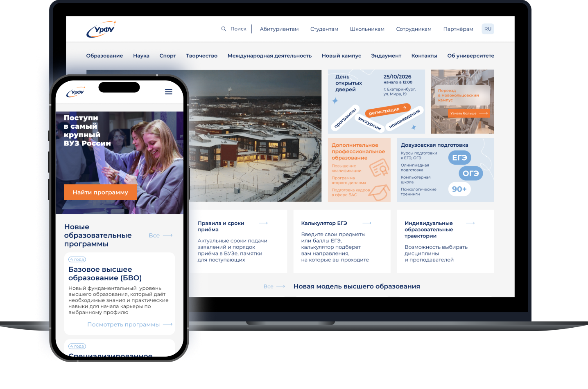
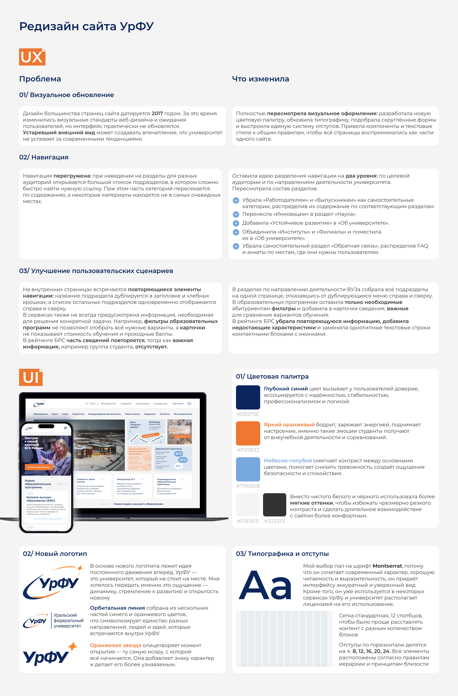

Сайт УрФУ
Концепция главной страницы Уральского федерального университета. В макете я объединила знакомство с университетом, события и переходы к разделам.

Обоснование решений

Скринкаст
Компоненты сайта
Шапка и быстрые действия задают структуру страницы. В библиотеке также собраны карточки программ и преподавателей, формы, поля выбора и пагинация.